Chapter 9: Pentatonic Scales
Back to Top
The Pentatonic Scale
Figure 9-1

Figure 9-2

Figure 9-3

Figure 9-4

Figure 9-5
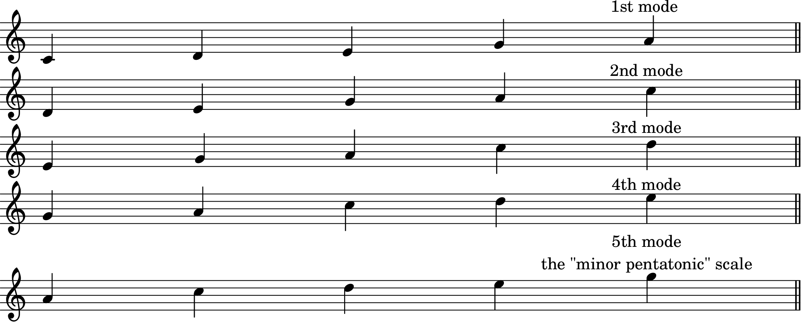
The Modes and the Minor Pentatonic Scale
Figure 9-6
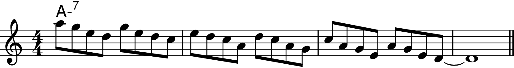
Figure 9-7
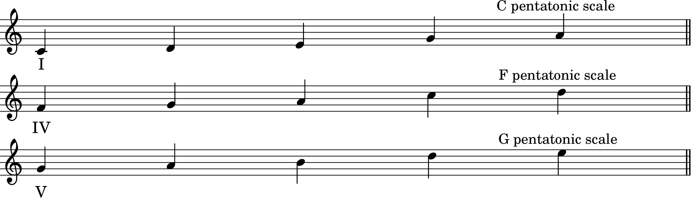
The I, IV and V Pentatonic Sclaes on II-V-I Chords
Figure 9-8
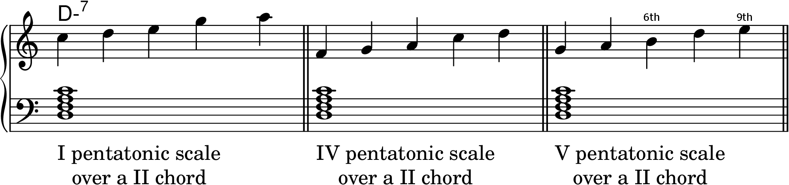
Figure 9-9
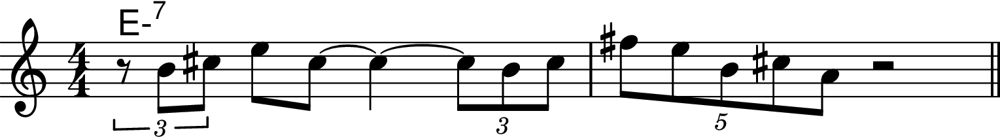
Figure 9-10
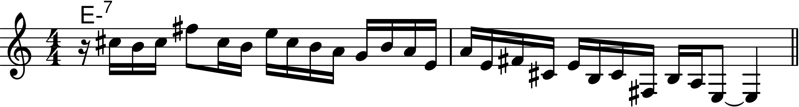
Figure 9-11

Figure 9-12
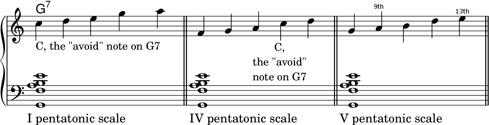
Figure 9-13
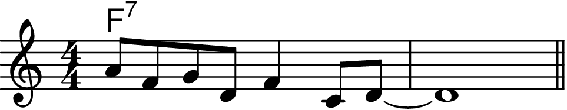
Figure 9-14
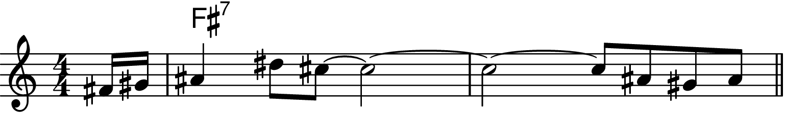
Figure 9-15
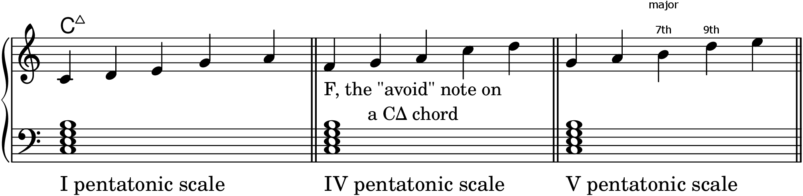
Figure 9-16
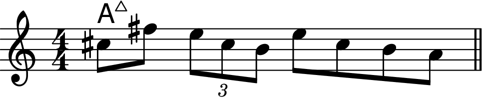
Figure 9-17
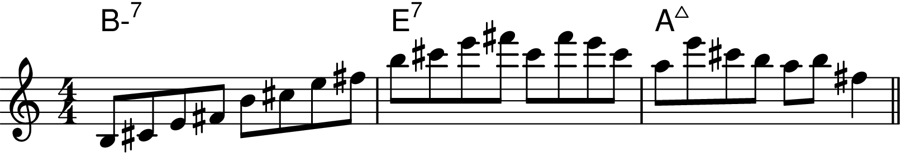
Figure 9-18
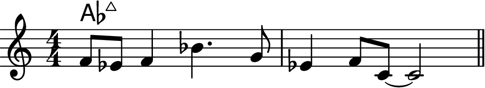
Figure 9-19
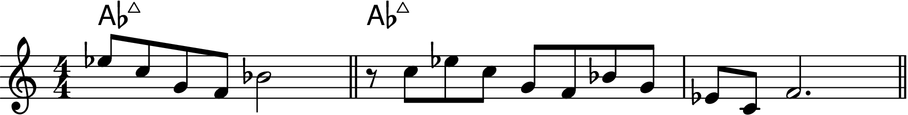
Figure 9-20
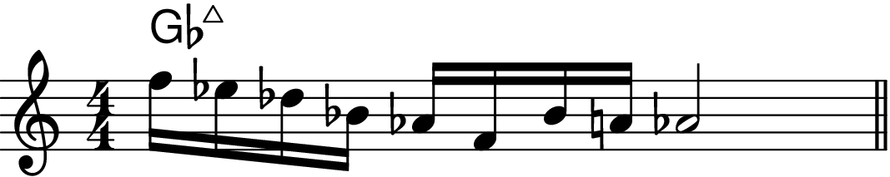
Figure 9-21
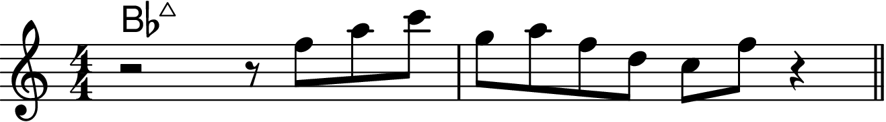
Figure 9-22
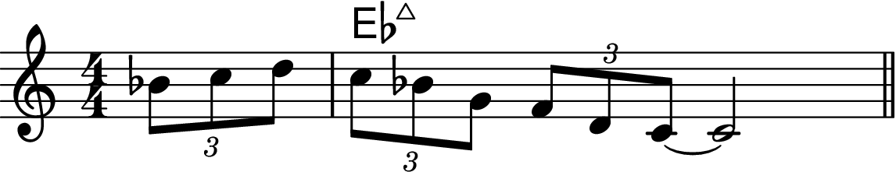
Figure 9-23
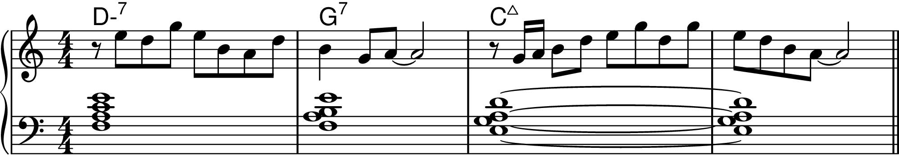
Playing Pentatonic Scales on "Giant Steps"
Figure 9-24
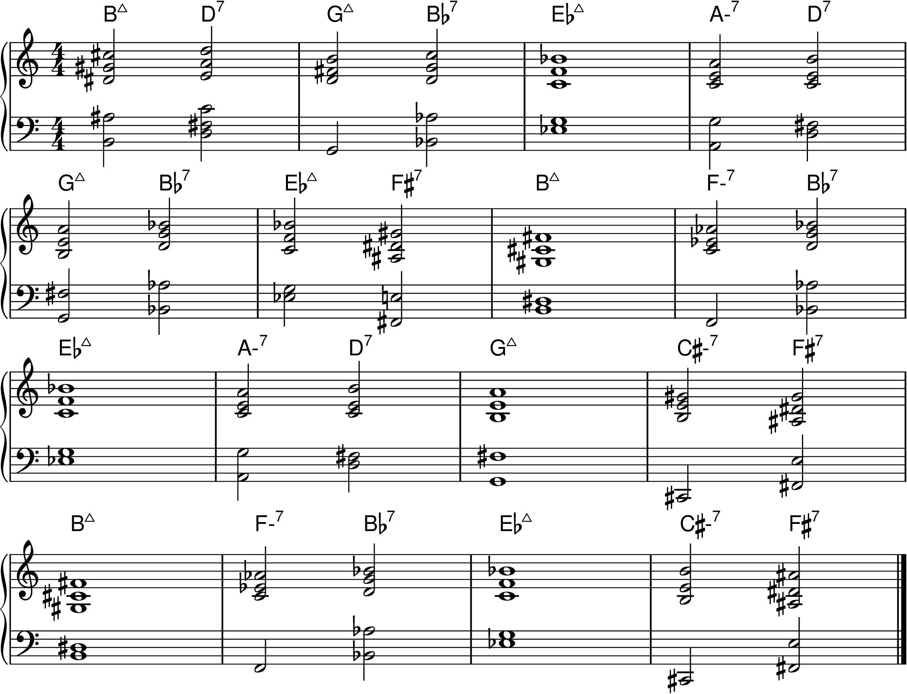
Figure 9-25
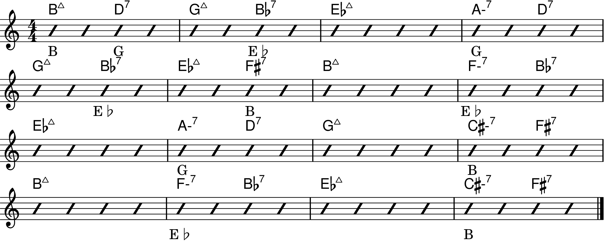
Figure 9-26
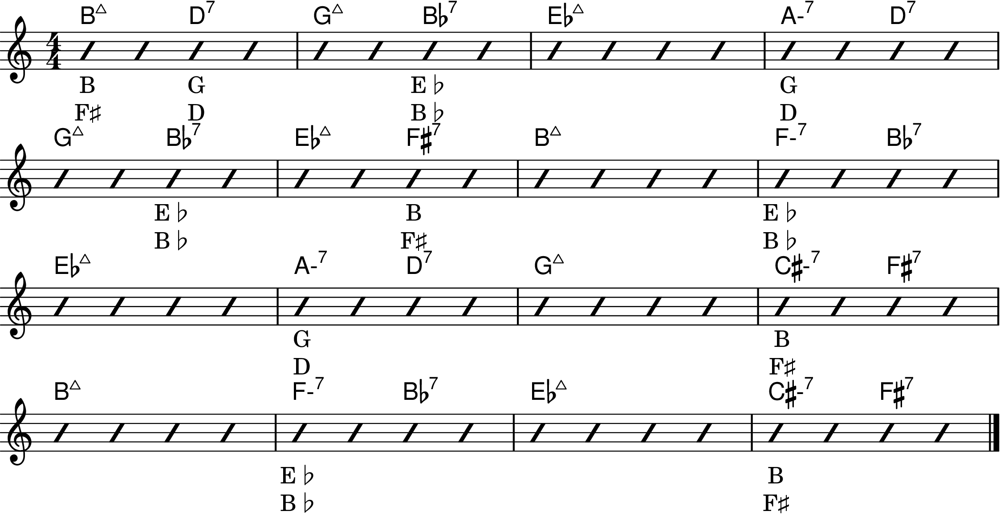
Figure 9-27
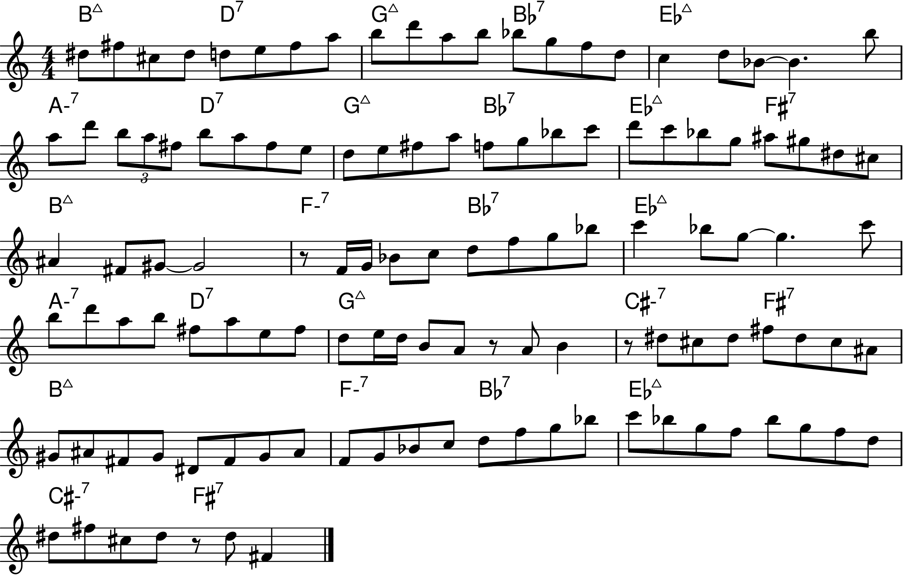
Figure 9-28
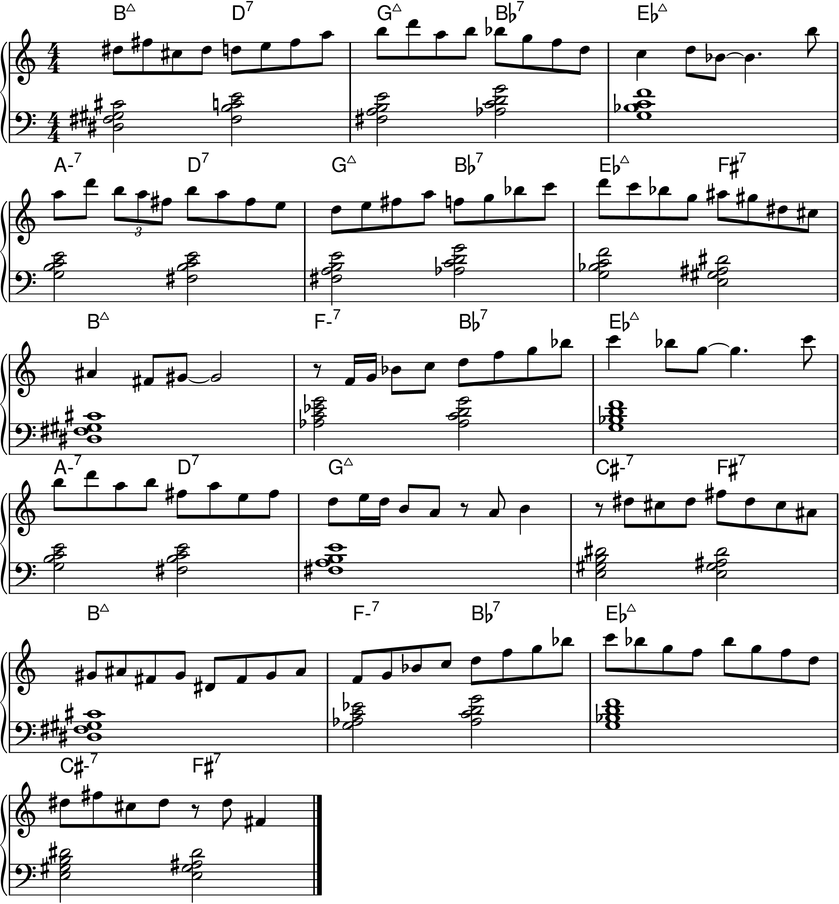
Pentatonic Scales and "Avoid" Notes
Figure 9-29
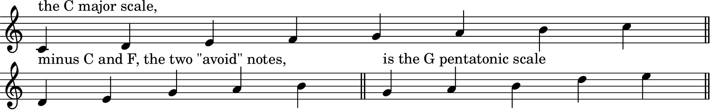
Figure 9-30
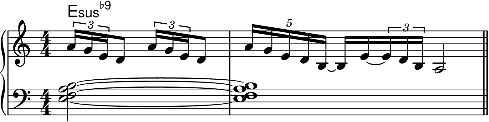
Playing the Same Pentatonic Scale on Successive Chords in Different Keys
Figure 9-31
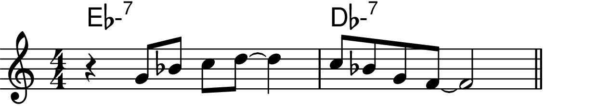
Figure 9-32
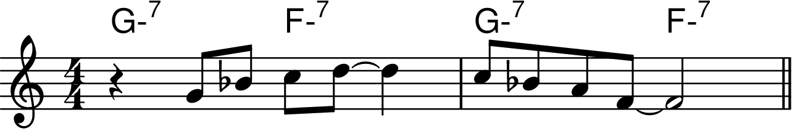
Figure 9-33
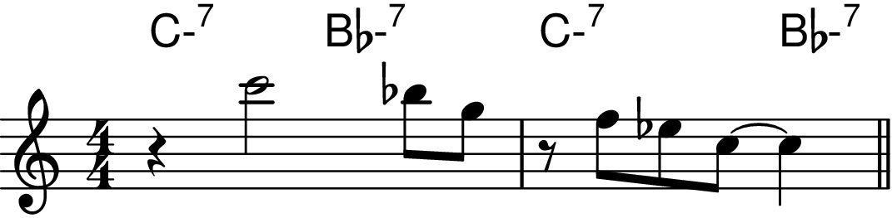
The II Pentatonic Scale over Major 7th Chords
Figure 9-34
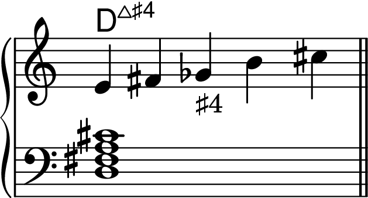
Figure 9-35
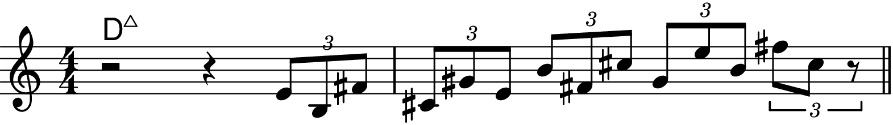
Figure 9-36
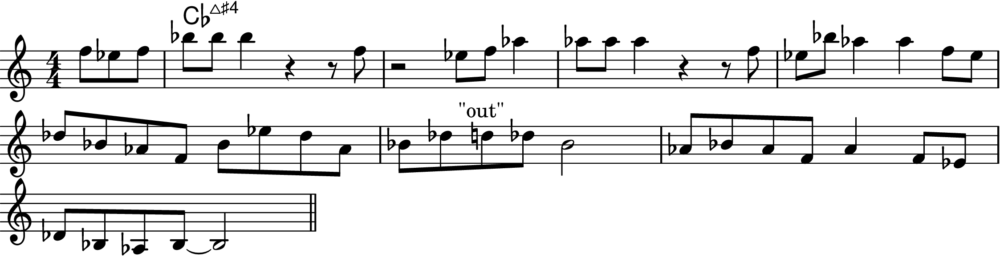
Figure 9-37

Figure 9-38
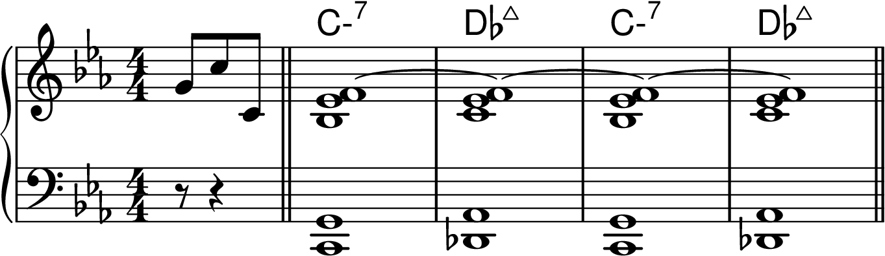
Figure 9-39
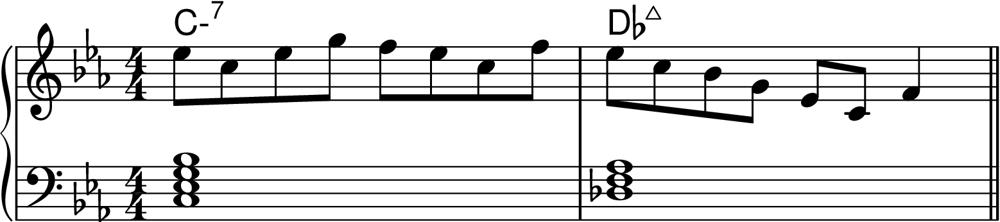
The IV Pentatonic Scale over Melodic Minor Chords
The In-sen and Other Five-Note Scales
The Minor Pentatonic and the Blues Scale
Practicing Pentatonic Scales